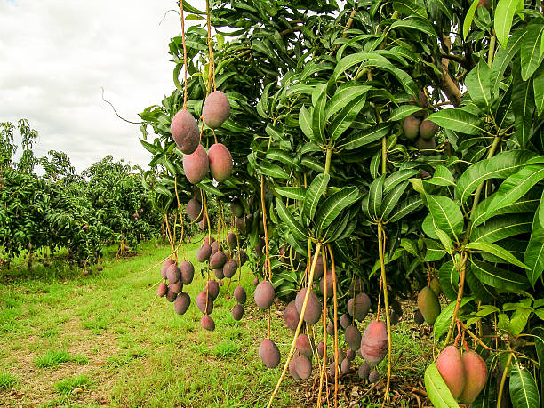

Mango: The King of Fruits

Uses of Mango
The mango is known for its sweet flavor and wide range of uses:
- Food: Mangoes are eaten fresh, used in smoothies, salads, desserts, and can be dried or canned.
- Mango Pulp: Used in juices, jams, ice creams, and sauces.
- Medicinal Uses: Mangoes are rich in vitamins and antioxidants, often used for digestion and skin health.
- Wood: The wood of the mango tree is used for furniture and carpentry.
Types of Mangoes
There are many varieties of mangoes, each with distinct flavors and characteristics:
- Alphonso: Known for its rich taste and fragrance, widely grown in India.
- Haden: A popular variety in the United States, with a rich, tangy taste.
- Tommy Atkins: Commonly grown in tropical regions, has a firm texture and mild sweetness.
- Kent: A sweet and juicy variety, perfect for eating fresh or making juice.
Growth Requirements for Mangoes
To grow mangoes successfully, certain conditions are necessary:
- Climate: Mangoes prefer hot, tropical climates with plenty of sunshine and a dry season for flowering.
- Soil: Well-drained, sandy loam or clay soils are ideal. The soil should be slightly acidic to neutral in pH.
- Water: Mango trees require moderate watering, particularly during the flowering and fruiting stages.
Natural Fertilizers for Mangoes
Use natural fertilizers to promote healthy mango tree growth:
- Compost: Provides essential nutrients and enhances soil structure.
- Bone Meal: Adds phosphorus and calcium, crucial for root and fruit development.
- Fish Emulsion: A good source of nitrogen, supporting healthy foliage and overall growth.
Pest and Disease Prevention
To protect mango trees from pests and diseases, follow these preventive measures:
- Mango Weevil: Control by removing infested fruits and using neem oil or other organic insecticides.
- Powdery Mildew: Prevent by ensuring good air circulation around the tree and applying fungicides if necessary.
- Anthracnose: A fungal disease that can be controlled by pruning infected branches and using fungicides.
Benefits of Mangoes
- High in Nutrients: Mangoes are a rich source of vitamins A, C, and E, along with antioxidants.
- Digestive Health: Mangoes help in digestion due to their fiber content and enzymes like amylase.
- Boost Immunity: The high vitamin C content helps boost the immune system and protect against infections.
Frequently Asked Questions
1. How long does it take for a mango tree to bear fruit?
A mango tree typically takes about 3 to 6 years to bear fruit, depending on the variety and growing conditions.
2. Can mangoes be grown in containers?
Yes, dwarf varieties of mangoes can be grown in containers, making them suitable for smaller spaces or balconies.
Back to Crop List